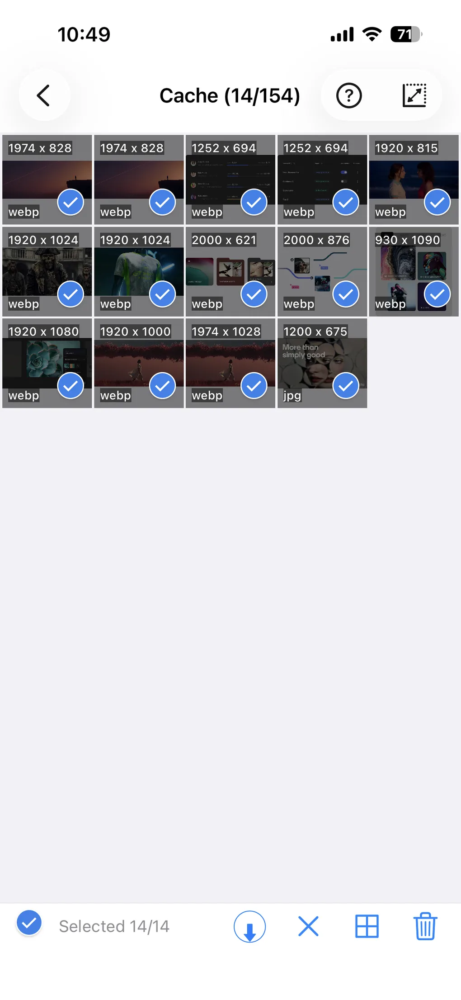

웹의 이미지를 한 번에 일괄 다운로드하는 방법
웹에서 이미지를 저장하려면 사진마다 우클릭을 하거나, 더 나쁜 경우에는 화면 캡처를 해야 했습니다. ImageGet은 다릅니다. URL을 붙여넣으면 페이지의 모든 이미지를 한 번의 탭으로 가져옵니다. Instagram에 로그인해 이미지와 릴스를 저장하거나, 좋아하는 다른 사이트에서도 받을 수 있습니다.
ImageGet을 무료로 다운로드하세요 — 페이지의 이미지와 릴스를 한 번의 탭으로 저장합니다.
ImageGet 다운로드한 장씩 저장하는 것보다 일괄 다운로드가 나은 이유
페이지에 이미지가 열두 장 있으면 하나씩 저장하는 일은 느리고 실수하기 쉽습니다. 몇 장은 빠뜨리거나, 저화질 썸네일을 잘못 받기도 합니다. 일괄 다운로드는 그 번거로운 일을 대신합니다. 한 번의 동작으로 전부 모아 두고, 무엇을 남길지는 직접 고르면 됩니다.
네 단계로 하는 방법
- 로그인하거나 URL을 복사합니다. Instagram 계정에 로그인하거나, 사진 갤러리·포럼 글·뉴스 기사처럼 원하는 페이지를 열고 링크를 복사하세요.
- ImageGet에 붙여넣습니다. 앱을 열고 링크를 붙여넣은 뒤 Go를 탭합니다. ImageGet이 페이지를 훑어 모든 이미지와 릴스를 모읍니다.

- 이미지를 확인합니다. 모든 이미지가 깔끔한 그리드로 나타납니다. 아무거나 탭하면 전체 화면으로 미리 볼 수 있고, 핀치로 확대해 확인한 뒤 결정하세요.
- 전부 저장합니다. Save All을 탭하면 한 번에 사진 앨범으로 저장됩니다.

팁: 작은 이미지는 걸러내기
페이지의 모든 이미지가 남길 만한 것은 아닙니다. 아이콘, 아바타, 작은 썸네일은 앨범만 어수선하게 만듭니다. Smart Filtering을 켜고 최소 크기를 정하면, ImageGet이 작은 것은 건너뛰고 실제로 원하는 큰 이미지만 남깁니다.

팁: 여러 페이지를 대기열에 넣기
페이지를 여러 개 처리해야 하나요? 대기열에 넣어 두면 ImageGet이 백그라운드에서 작업하는 동안 계속 둘러볼 수 있습니다. 기다릴 필요 없이, 준비되었을 때 이미지가 저장되어 있습니다.
FAQ
웹 페이지의 이미지를 한 번에 모두 다운로드할 수 있나요?
ImageGet에 URL을 붙여넣고 Go를 탭한 뒤, 그리드를 확인하고 Save All을 탭하세요. 페이지의 모든 이미지가 한 번에 사진 앨범에 저장됩니다.
이미지를 무료로 일괄 다운로드할 수 있나요?
네. 무료 플랜에 웹 이미지 다운로드 2회가 포함됩니다. Premium으로 업그레이드하면 횟수 제한 없이, 광고 없이 저장할 수 있습니다.
Instagram이나 다른 사이트에서도 되나요?
네. Instagram에 로그인해 이미지와 릴스를 저장하거나, 다른 사이트의 URL을 붙여넣어 이미지를 다운로드할 수 있습니다.